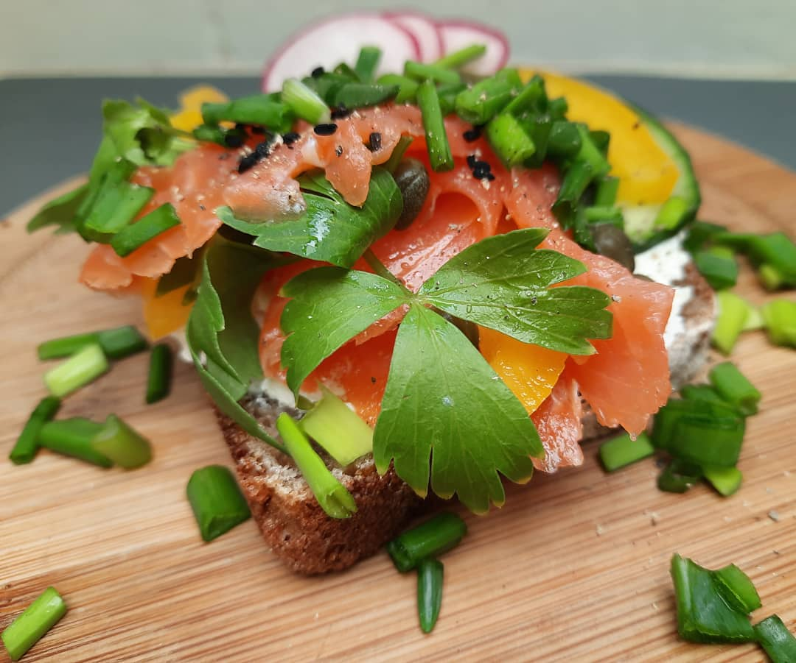

Kapary podľa @zjem_ciastko — Normy Jedál
Kanapeczka 😊🥪 #kanapka #łosoś #salomon #szczypiorek #chive #bellpepper #wędzonyłosoś #rzodkiewka #radish #chleb #bread #kromka #lubczyk #papryka #ogórek #cucumber #serek #serekchrzanowy #chrzan #kapary #horseradish #capers #śniadanie #breakfast #czarnuszka #pepper #fit #herbs #zielenina